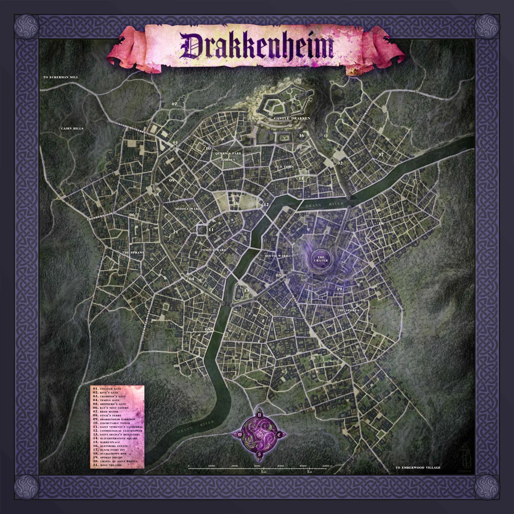
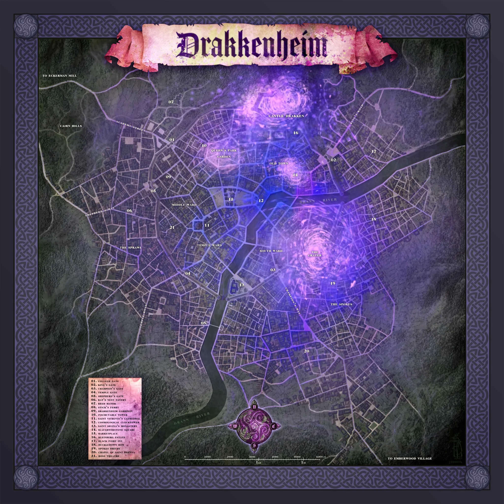

Crafting & Harvesting
Track harvested monster components, discover schematics, check which items the party can craft, and spend the required materials.
0 active components
0 known recipes
0 craftable now
A Drakkenheim DM Tool
Quick reference for Drakkenheim-specific conditions.
You have Disadvantage on Intelligence, Wisdom, and Charisma attacks rolls, ability checks, and saving throws.
You can't cast spells, except for cantrips with a casting time of 1 action.
You're losing blood to an open wound.
You're wounded. A creature is Bloodied while it has half its Hit Points or fewer remaining.
You're on fire or covered in acid.
You have Disadvantage on Dexterity attack rolls, ability checks, and saving throws.
The Contamination condition is detailed in the Contamination rules.
You can move or take an action on your turn, not both. You can't take Bonus Actions.
Attack rolls against you have Advantage.
You can't take Reactions.
A character with Drakkenheim Madness gains one of the following traits.
You have Disadvantage on Strength attack rolls, ability checks, and saving throws.
You're partially encased in ice.
Any attack that hits you is a Critical Hit.
Your Speed becomes 0, and you can't benefit from any bonuses to your Speed. If you're flying when you become Immobilized, you fall.
Roll the die indicated by the condition, such as “Jinxed 1d4”, each time you make an attack roll or saving throw. Subtract the value on the die from the result.
You have Disadvantage on Constitution saving throws.
Your Speed is halved.
You can't make more than one weapon attack during your turn, regardless of your class features, spells, or magic items.
Add a die to your attack rolls and saving throws. The die rolled is specified by the condition, such as Valor (1d4).
You deal half damage with weapon attacks and spells.
Choose a landmark, then click the corrected point on the map.
Turn moving on, then click a landmark pin to select it or click the map to move the selected landmark. Changes are saved in this browser and included in save codes.
Quick guide for planning a run into Drakkenheim.
Use Day starts for the time the party leaves its safe haven. If the party leaves Emberwood at 08:00, set 08:00 before adding the approach.
Choose Emberwood Village, Camp Dawn, or Eckerman Mill, then press Add Approach. If no city route is already plotted, the route starts from that road marker on the map.
Click the map or a landmark to draw travel. Change pace or road type before the next click if the party switches movement style during the same exploration hour. Side roads / rubble force slow pace for that movement.
Fast, normal, and slow paces use different line styles. When an hour is not fully used, the next click continues the same hour. Double-click to end the current route hour early at a point, landmark, or the current route hour marker; the log uses only the time actually spent.
Use the vertical zoom slider on the map to zoom in. Hold right-click and drag on the map to pan around while zoomed.
Use Add Event for short rests, searching, wrong turns, and other interruptions. Standard events add one hour. Custom notes can use their own duration.
Add Short Rest Spot saves a known safe place on the map. The party can route back to it later without searching again. Open Pin Mover is only for correcting landmark positions.
Record time spent during the route.
Default is 60 minutes. Use Insert event to place this in the middle of an already plotted route; later times adjust automatically.
Click a landmark to route towards it.
Aldor stocks 1d4 uncommon schematics and one rare schematic. Emberwood scarcity doubles their normal price: uncommon schematics cost 100 gp; rare schematics cost 1,000 gp.
Track harvested monster components, discover schematics, check which items the party can craft, and spend the required materials.
| Rarity | Challenge Rating |
|---|---|
| Common | 1/4 to 1/2 |
| Uncommon | 1 to 4 |
| Rare | 5 to 10 |
| Very Rare | 11 to 16 |
| Legendary | 17+ |
| Monster challenge rating | Component value |
|---|---|
| 0 to 1/2 | 1d4 × 10 gp |
| 1 to 4 | 1d6 × 20 gp |
| 5 to 10 | 3d6 × 200 gp |
| 11 to 16 | 1d6 × 2,000 gp |
| 17 to 20 | 2d6 × 5,000 gp |
| 21+ | Priceless |
| Creature type | Price multiplier |
|---|---|
| Giants, Monstrosities, Plants | No change |
| Constructs, Elementals, Oozes, Undead | ×1.5 |
| Aberrations, Dragons | ×2 |
| Celestials, Fey, Fiends | ×3 |
| Item rarity | Typical price |
|---|---|
| Common | 5 gp |
| Uncommon | 50 gp |
| Rare | 500 gp |
| Very Rare | 5,000 gp |
| Legendary | 50,000 gp |
| Animus rarity | Delerium vessel |
|---|---|
| Common | Chip |
| Uncommon | Fragment |
| Rare | Shard |
| Very Rare | Crystal |
| Legendary | Geode |
An animus vessel may instead be created in 1 hour by combining any three other components of the same rarity. Aberrations, celestials, constructs, dragons, elementals, fey, fiends, giants, monstrosities, plants, oozes, and undead normally possess an animus.
Select a harvested component to find recipes it may contribute to. Research normally occurs during a long rest.
After selecting a component to study, this shows unknown recipes that use it and whose full component requirements are already in the party inventory.
Search a creature or encounter, open its harvest list, then click the components the party collects. Monsters of Drakkenheim creatures use their book-listed components; other encounter creatures use campaign components based on the same categories.
Move a faction's standing to update its attitude towards the party.
Write each faction's current goal or conflict, then advance or regress the clock as the campaign changes.
Click the map to set the party's starting point. Each later click adds one exploration hour in that direction, using the selected travel mode and pace.


Click numbered landmark pins to route towards them. The map distance is approximate and intended for Drakkenheim's abstract urban exploration rules.
No proper equipment: extraction takes ten times as long. Massive clusters are impossible without heavy equipment or powerful magic.
Enter check results in the helper above, then calculate the search outcome.
No encounter generated yet. The streets are quiet, for now.
A Lucky Find will be rolled with each encounter.
No common location generated yet.
No warped ruin generated yet.
Rolls a d100 Drakkenheim rumour.
No arcane anomaly rolled yet.
No mutation rolled yet.
Long Rests. Each time you finish a Long Rest while you have 1 or more Contamination levels, roll 1d20. On a 1, you gain a Contamination level.